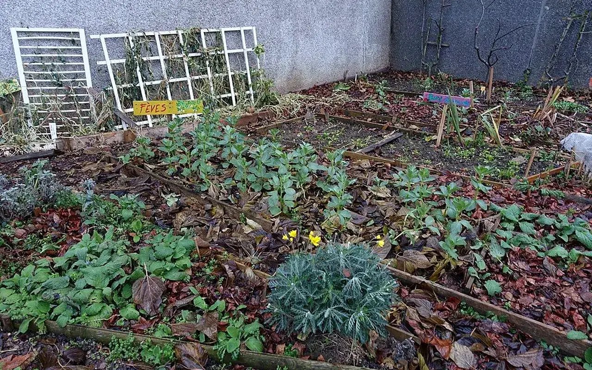

Dossier public
Espace signalement
Structurer un système de signalement pour les lieux vacants, abandonnés, dépôts sauvages et matériaux disponibles.

Logement vacant
Adresse, commune, état apparent et informations utiles à vérifier.
Commerce fermé
Local commercial inoccupé, rideau fermé, cellule à potentiel.
Bâtiment abandonné
Bâtiment sans usage connu nécessitant une qualification prudente.
Terrain abandonné
Friche, parcelle inutilisée ou espace délaissé à observer.
Dépôt sauvage
Information à orienter vers les acteurs compétents selon le territoire.
Matériaux disponibles
Ressources réemployables à décrire avant toute collecte.
Formulaire de signalement
Vérification de la connexion base de données sécurisée en cours.
Connexion planifiée
Champs prévus : type, adresse, commune, description, photo, contact facultatif, statut de validation, date de dépôt et rattachement territorial.
Un signalement n'est pas une publication automatique
Les informations transmises servent d'abord à qualifier une situation. TVF peut demander des précisions, masquer une adresse, refuser une publication ou orienter vers un service competent lorsque le sujet releve de la sécurité, de la salubrite ou d'une urgence.
Informations utiles
Adresse ou repere, commune, description, photo, date d'observation, type de lieu et contact facultatif.
Protection
Aucune donnée sensible n'est publiee sans vérification et sans intérêt territorial clair.
Suite possible
Classement interne, demande de précision, rattachement à une carte, orientation vers une collectivité ou préparation d'un dossier.
Rejoindre TVF
Après le signalement
Un signalement utile doit pouvoir être qualifié, documenté et orienté vers un interlocuteur ou un dispositif adapté.
CollectivitéDevenir territoire partenaireDiagnostic, données, coopération, indicateurs.
PropriétaireProposer un bienLogement, commerce, bâtiment ou terrain à qualifier.
EntrepriseContribuer à l'économie circulaireMatériaux, compétences, locaux, mécénat.
AssociationConstruire une action localeBesoins, publics, bénévolat, animation.
CitoyenSignaler une ressourceLieu vacant, matériau disponible, besoin local.
InvestisseurFinancer un impact vérifiableProjet qualifié, budget, reporting, transparence.
BénévoleRejoindre le mouvementMissions, chantiers, documentation, terrain.
Lecture opérationnelle
Comprendre rapidement Espace signalement
| Question | Réponse TVF | Preuve ou livrable attendu |
|---|---|---|
| Quel besoin traite la page ? | Qualifier une situation territoriale avant de proposer une action. | Fiche de lecture, diagnostic ou formulaire adapté. |
| Quels acteurs sont concernés ? | Collectivités, propriétaires, entreprises, associations, financeurs ou citoyens selon le sujet. | Interlocuteur identifié, rôle clarifié, accord de publication si nécessaire. |
| Comment passer à l'action ? | Documenter le besoin, choisir le parcours, rassembler les pièces et cadrer les responsabilités. | Fiche projet, convention, budget, calendrier et indicateurs. |
Lecture opérationnelle
Du constat à l'action : Espace signalement
Cette page donne un point d'entree pratique vers la méthode, les documents et les parcours TVF.
Problème
Les acteurs ont besoin d'une information claire pour savoir quoi proposer, comment agir et quelles limites respecter.
Donnée utile
Repere : les données et résultats TVF doivent etre dates, sources et verifiables avant publication.
Solution TVF
TVF oriente la demande vers le bon parcours, les bons documents et les bonnes responsabilités.
Méthode
Chaque suite doit etre qualifiée : besoin, interlocuteur, territoire, pieces, convention et calendrier.
Acteurs
Habitants, propriétaires, collectivités, entreprises, associations, financeurs et benevoles.
Impact visé
Faire gagner du temps, éviter les malentendus et transformer une intention en action realiste.
FAQ
Questions fréquentes
Espace signalement aide à choisir le bon parcours avant de transmettre une demande ou une ressource.
Quel formulaire choisir ?
Espace signalement oriente la demande selon sa nature : lieu vacant, matériaux, partenariat, bénévolat, don ou projet territorial.
Que faut-il structurer avant d'écrire ?
Pour Espace signalement, adresse, commune, description, photos autorisées, contact, statut connu et urgence éventuelle permettent de qualifier plus vite la demande.
Une réponse vaut-elle validation du projet ?
Non. Dans Espace signalement, toute action doit encore être vérifiée, documentée et, si besoin, encadrée par une convention.
Passer à l’action
Choisir le parcours adapté à votre rôle
Chaque demande doit être orientée vers un cadre clair : besoin territorial, propriétaire, ressource, financement, bénévolat ou coopération institutionnelle.